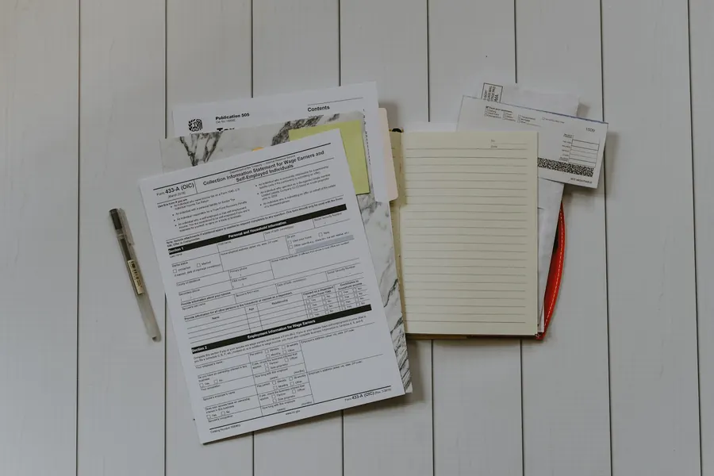
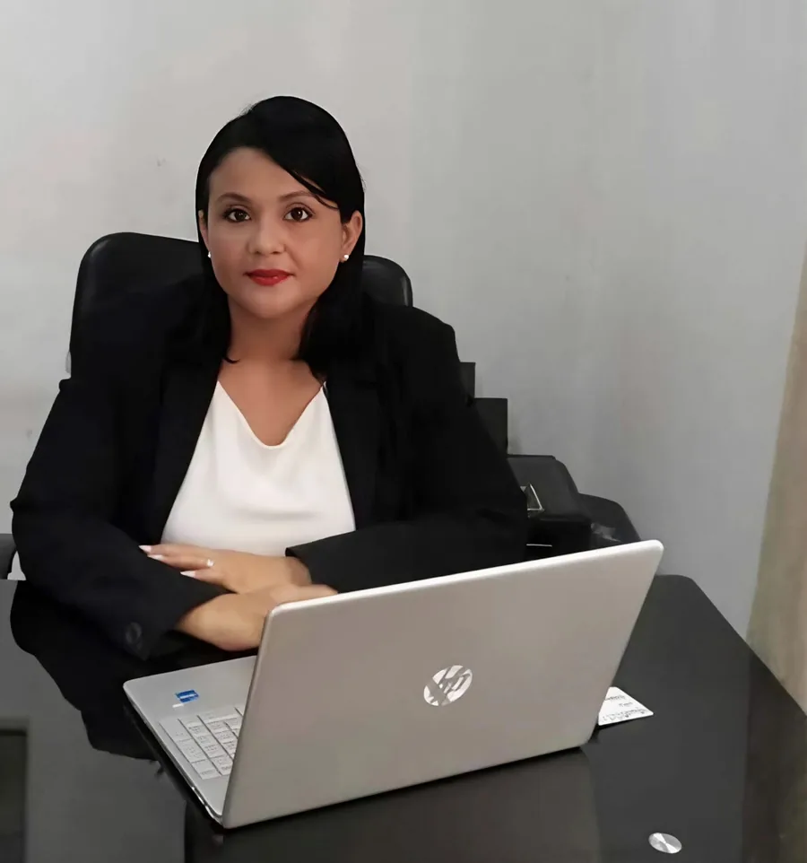

Asesoría Legal
- Consultas legales
- Orientación jurídica para personas y empresas
- Análisis de contratos
- Asistencia en procesos legales
Confianza profesional y seguridad jurídica para su tranquilidad.
Servicio legal y notarial en Guanacaste y toda Costa Rica, con enfoque humano, claro y estratégico para personas, familias y empresas. Atención personalizada en cada gestión.
Áreas de práctica diseñadas para brindar seguridad jurídica y acompañamiento completo.

Cada caso recibe atención directa, clara y oportuna, con el respaldo de más de doce años de experiencia legal en Guanacaste.
Hable y trabaje directamente con la Licda. Venegas, sin intermediarios ni asistentes.
Los asuntos legales no pueden esperar. Atención rápida con priorización según la urgencia del caso.
Manejo discreto y seguro de cada expediente, con total reserva y sigilo profesional.
Explicamos cada proceso en términos comprensibles, sin tecnicismos innecesarios.
Experiencia en matrimonios, traspasos y asesoría legal para nacionales y personas extranjeras.
Atención de lunes a viernes y los fines de semana con cita previa, según su disponibilidad.

La Licda. Anyela Venegas Gómez es abogada y notaria pública incorporada al Colegio de Abogados y Abogadas de Costa Rica, con más de doce años de experiencia legal en Guanacaste. Ofrece asesoría integral con enfoque en claridad documental y defensa de los intereses de cada cliente.
Atiende en Liberia, Nicoya, Santa Cruz, Tamarindo, Flamingo, Nosara, Sámara, Playas del Coco y en toda Costa Rica. Su metodología combina rigor jurídico, comunicación directa y acompañamiento continuo.
Propiedades, vehículos y otros bienes inscritos: desde la revisión inicial hasta la inscripción final, cada etapa se gestiona con precisión jurídica.
Análisis del negocio y definición de estrategia legal.
Revisión de titularidad, gravámenes y antecedentes.
Elaboración y protocolización de documentos.
Gestión ante Registro Nacional y cierre del trámite.
Atención jurídica profesional para procesos familiares que requieren claridad, respeto y protección de derechos.
Acompañamiento legal y notarial para celebrar matrimonios civiles en Costa Rica, con revisión documental precisa y orientación en cada requisito para nacionales y personas extranjeras.
Atendemos clientes en toda la provincia de Guanacaste y en todo el territorio nacional, con gestiones presenciales y coordinación remota.
Si tiene una consulta que no aparece aquí, contáctenos directamente por WhatsApp o correo electrónico.
Escriba su consulta y reciba orientación profesional sobre temas legales, notariales, inmobiliarios o familiares en Guanacaste y en toda Costa Rica.
Teléfono: +506 8682-5916 Correo: anyelavenegasg@gmail.com WhatsApp: +506 8682-5916 Guanacaste, Costa Rica — Ver en Google Maps Facebook: Licda. Anyela Venegas GómezSi no visualiza el mapa, use este enlace: Abrir ubicación en Google Maps.